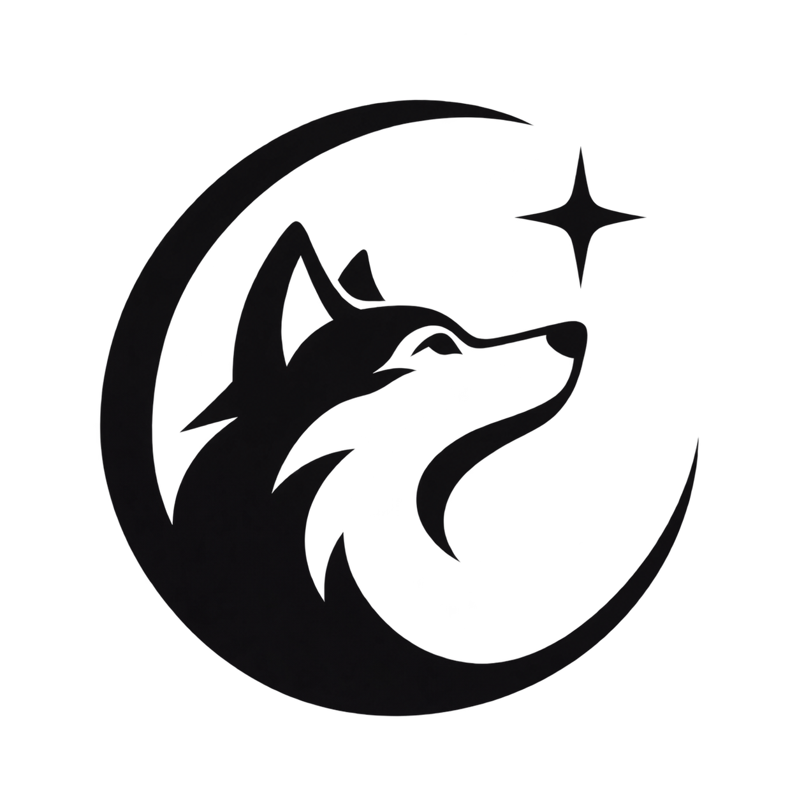
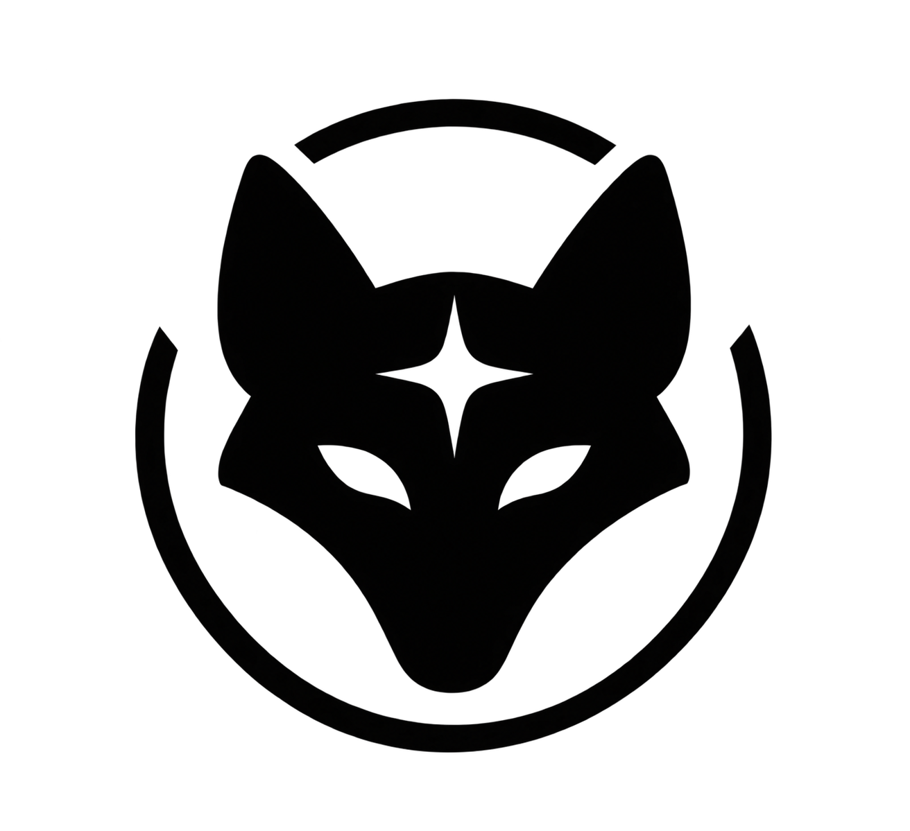
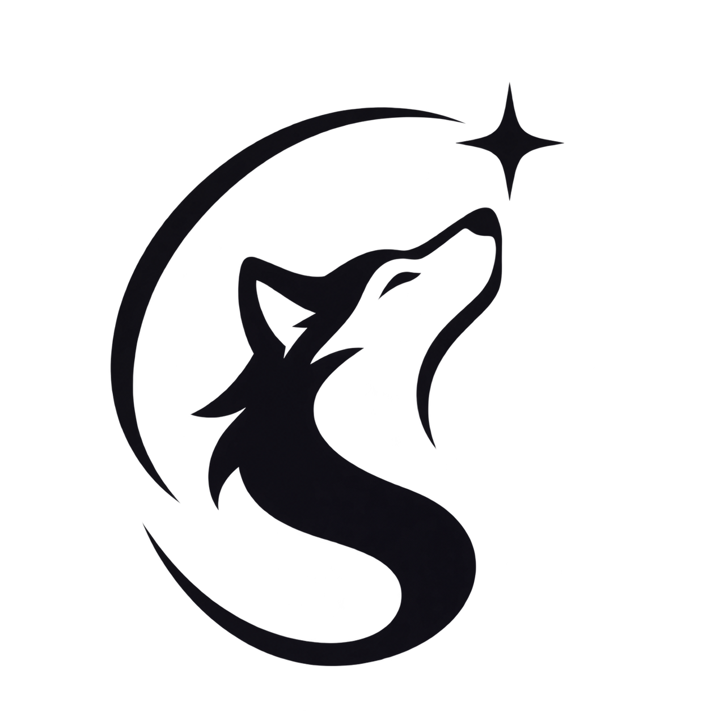

01 / Orbit
An alert companion, an open orbit, and Sirius above the muzzle. Closest to your first reference.
Orbit
Three original directions. One colour, transparent backgrounds, and a celestial canine silhouette. Shown on light and dark surfaces, down to 24 pixels.

An alert companion, an open orbit, and Sirius above the muzzle. Closest to your first reference.

A forward-facing guardian. The forehead star doubles as a compass; the broken circle keeps it open.

A wolf looking toward its star. The sweeping neck suggests an S, with the fewest moving parts.